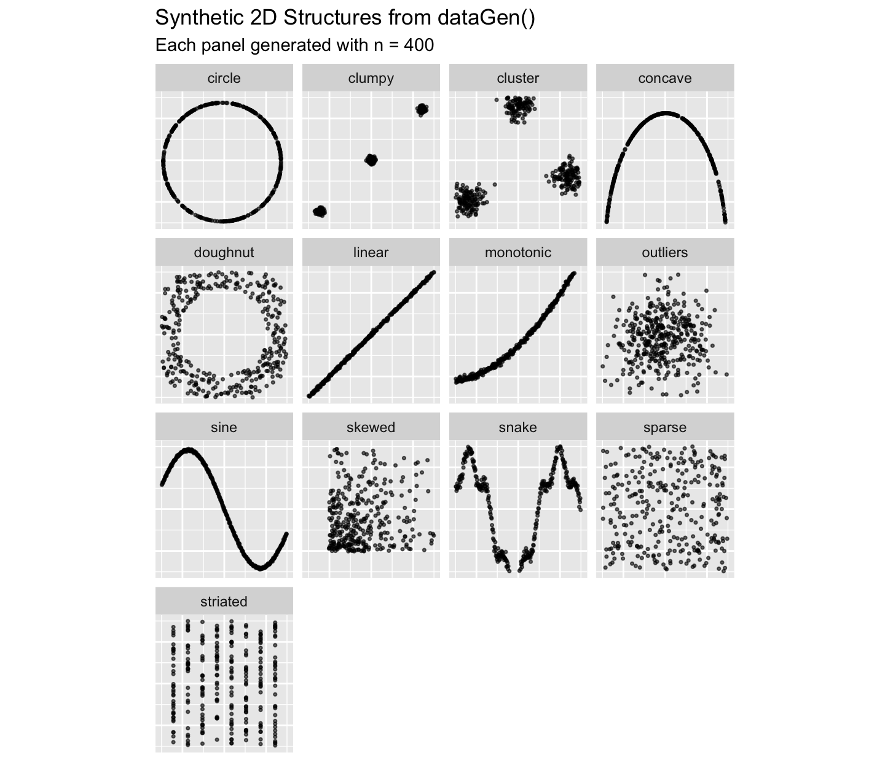
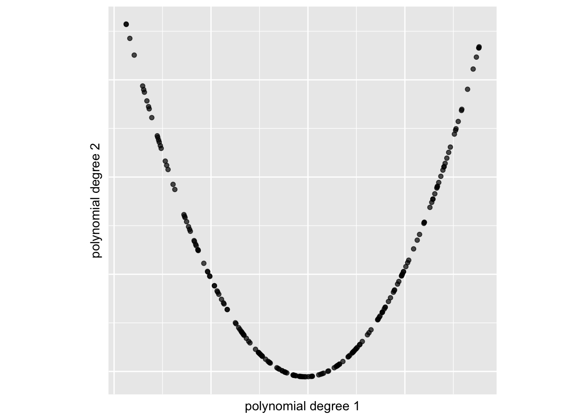

More Descriptive Analysis of Projection Pursuit Indices
This vignette is a guide to diagnosing Projection Pursuit Indices in high-dimensional exploratory analysis. We examine how Projection Pursuit Indices behave under different conditions. The goal is to help you decide which index to use, how to tune it, and how to trust its signals.
Overview
This vignette presents a workflow built around these functions: data_gen(), noise_gen(), ppi_mean(), ppi_scale(), ppi_noise_threshold() and ppi_samplesize_effect().
1) Generating Synthetic Structures and Noise
-
data_gen(); generate structured 2D point sets (e.g.,sine,circle,cluster) or orthogonal polynomial features for benchmarking/visualisation.-
Structures (
typelike"sine","circle", …) return a tibble with columnsx,y, andstructure. -
Polynomial (
type = "polynomial") returns ann × degreematrix of orthogonal polynomial basis vectors on [0,1].
-
Structures (
noise_gen(); generates a numeric vector of noise values (as a tibble withvalueandtype) from distributions such as:"gaussian","uniform","lognormal","t_distributed","cauchy","beta_noise","exponential","microstructure".
We’ll preview available structures, create simple polynomial features, sample a few noise types, and combine structure + noise.
Function usage
data_gen(type = "all", n = 500, degree = NULL, seed = NULL)-
type:"linear","sine","circle","cluster","snake","outliers","sparse","clumpy","skewed","striated","concave","monotonic","doughnut","all", or"polynomial". -
n: number of points/samples. -
degree: only for"polynomial"; number of basis columns. -
seed: optional seed for reproducibility.
noise_gen(n = 500, type = "gaussian", level = 0.1, seed = NULL)-
n: number of noise samples. -
type: distribution name ("gaussian","uniform","lognormal","t_distributed","cauchy","beta_noise","exponential","microstructure"). -
level: scale/strength of noise. -
seed: optional seed.
Example usage
Preview all structures
ggplot2::ggplot(df_all, ggplot2::aes(x, y)) +
ggplot2::geom_point(alpha = 0.6, size = 0.6) +
ggplot2::facet_wrap(~structure) +
ggplot2::labs(
title = "Synthetic 2D Structures from dataGen()",
subtitle = "Each panel generated with n = 400"
) +
ggplot2::xlim(-1.5, 1.5) +
ggplot2::ylim(-1.5, 1.5) +
ggplot2::theme(
axis.text = ggplot2::element_blank(),
axis.title = ggplot2::element_blank(),
axis.ticks = ggplot2::element_blank()
)
Polynomial features (type = "polynomial")
# Generate a 4-degree orthogonal polynomial basis
dPoly <- spinebil::data_gen("polynomial", n = 200, degree = 4, seed = 1)
ggplot2::ggplot(dPoly, ggplot2::aes(x = dPoly[, 1], y = dPoly[, 2])) +
ggplot2::geom_point(alpha = 0.7) +
ggplot2::xlab("polynomial degree 1") +
ggplot2::ylab("polynomial degree 2") +
ggplot2::theme(
aspect.ratio = 1,
axis.text = ggplot2::element_blank(),
axis.ticks = ggplot2::element_blank()
)
noise_gen(): noise distributions
Combining structure + noise
As a simple example, let’s take a clean sine wave and add Gaussian noise to y.
set.seed(345)
n <- 500
sine_clean <- spinebil::data_gen("sine", n = n) |> dplyr::mutate(y = sin(x))
# Noise to add on y
eps <- spinebil::noise_gen(n = n, type = "gaussian", level = 0.06, seed = 123)$value
sine_noisy <- sine_clean |> dplyr::mutate(y = y + eps)
dplyr::bind_rows(
sine_clean |> dplyr::mutate(which = "clean"),
sine_noisy |> dplyr::mutate(which = "noisy (gaussian, level = 0.06)")
) |>
ggplot2::ggplot(ggplot2::aes(x, y, color = which)) +
ggplot2::geom_point(alpha = 0.6, size = 0.6) +
ggplot2::labs(
title = "Sine Structure with and without Added Noise",
color = NULL
) +
ggplot2::theme(
axis.text = ggplot2::element_blank(),
axis.title = ggplot2::element_blank(),
axis.ticks = ggplot2::element_blank()
)
Return value
-
data_gen("polynomial", ...)returns ann × degreematrix. -
data_gen(<other type>, ...)return a tibble with columnsx,y, andstructure. -
noise_gen(...)returns a tibble with columnsvalue(numeric) andtype(factor/character).
2) Finding Projection Pursuit Index Mean
ppi_mean() simulates and summarizes a projection pursuit index (PPI) over all 2D variable pairs in a dataset. For each pair, it repeats the index evaluation n_sim times (sampling n_obs observations each time) and returns the mean index per pair.
Function usage
res <- ppi_mean(
data, # data frame with ≥ 2 numeric columns
index_fun, # function taking n×2 matrix and returning a numeric value
n_sim = 100,
n_obs = 300
)Example Usage
data <- as.data.frame(spinebil::data_gen(type = "polynomial", degree = 2))
res <- spinebil::ppi_mean(data, spinebil::scag_index("stringy"), n_sim = 5)
res
#> # A tibble: 1 × 3
#> var_i var_j mean_index
#> <chr> <chr> <dbl>
#> 1 1 2 1Return value
A tibble with one row per variable pair:
-
var_i,var_j; names of the variables forming the pair. -
mean_index; the mean of the index acrossn_simsimulations for that pair.
3) Comparing Index Scale on Structured vs. Noisy Data
ppi_scale() runs simulations to compare a projection pursuit index (PPI) on:
- Structured dataset (your input), and
- Pure Gaussian noise (same sample size).
For every pair of variables and across many simulations, it records the index values for both cases so you can see the scale and separation of the index between structure and noise.
Function Usage
ppi_scale(
data,
index_fun,
n_sim = 100,
n_obs = 500,
seed = NULL
)Inputs:
-
data; data frame/tibble/matrix; (>= 2 numeric columns). -
index_fun; function: takes a 2-column matrix and returns a numeric scalar (e.g.,scag_index("stringy")). -
n_sim; number of simulations. -
n_obs; number of observations. -
seed; optional seed for reproducibility.
Example usage
Let’s evaluate the stringy index from the cassowaryr package to see how the scale change for pure noise and structure.
res <- spinebil::ppi_scale(spinebil::data_gen("polynomial", degree = 3), spinebil::scag_index("stringy"), n_sim = 3)
head(res)
#> # A tibble: 6 × 6
#> simulation var_i var_j var_pair sigma index
#> <int> <chr> <chr> <chr> <dbl> <dbl>
#> 1 1 1 2 1-2 0 1
#> 2 1 1 2 1-2 1 0.732
#> 3 1 1 3 1-3 0 1
#> 4 1 1 3 1-3 1 0.783
#> 5 1 2 3 2-3 0 0.996
#> 6 1 2 3 2-3 1 0.719Here sigma = 0 is structured and sigma = 1 is pure noise.
Boxplots: structured vs noise per variable pair
res |>
dplyr::mutate(sigma = factor(sigma, levels = c(0, 1), labels = c("structured", "noise"))) |>
ggplot2::ggplot(ggplot2::aes(x = sigma, y = index, fill = sigma)) +
ggplot2::geom_boxplot() +
ggplot2::facet_wrap(~var_pair) +
ggplot2::labs(
title = "Index scale on structured vs noisy data",
x = NULL, y = "index"
)
Return value
ppi_scale() returns a tibble with columns:
-
simulation: simulation index -
var_i,var_j: the two variable names -
var_pair:"var_i-var_j"compact label. -
sigma:0 = structured,1 = noise- Structured value (
sigma = 0); compute the index on the actual pair. - Noise value (
sigma = 1); generaten_obsstandard-normalx,y, scale to mean 0 / sd 1, compute the index.
- Structured value (
-
index: the index value fromindex_fun.
4) Estimating a Noise Threshold for Projection Pursuit Indices
ppi_noise_threshold() estimates the 95th percentile of a projection pursuit index (PPI) under synthetic noise. This gives you a null threshold: if an observed index on real data exceeds this value, it may indicate non-random structure.
The function supports different noise types via noise_gen() (e.g., Gaussian, -distributed, Cauchy, microstructure) and lets you set the number of simulations and sample size per simulation.
Function usage
ppi_noise_threshold(
index_fun,
n_sim = 100,
n_obs = 500,
noise_type = "gaussian",
noise_level = 0.01,
seed = NULL
)Inputs :
-
index_fun: a function that returns a single numeric value. -
n_sim: number of simulations. -
n_obs: sample size per simulation. -
noise_type/noise_level: passed through tonoise_gen()to control the distribution and its scale. -
seed: for reproducibility.
Example Usage
thr <- spinebil::ppi_noise_threshold(
index_fun = scag_index("stringy"),
noise_type = "cauchy",
noise_level = 0.1,
n_sim = 10,
n_obs = 100
)
thr
#> 95%
#> NAReturn value
-
ppi_noise_threshold()returns a single numeric: estimated 95th percentile of the index under the specified noise model.
5) Sample-Size Effects for Projection Pursuit Indices under Gaussian Noise
This demonstrates how to use the ppi_samplesize_effect() function to study how projection pursuit index (PPI) values behave under increasing sample sizes in purely noisy (Gaussian) data. For each size, it computes a specified index function over the samples and records the 95th percentile of index values observed. This helps estimate the distributional behavior of the index under pure noise, depending on sample size. These curves are useful as a null reference: above-curve values may indicate non-random structure.
Function Usage
ppi_samplesize_effect(index_fun, n_sim = 100)-
index_fun: a function that accepts the data for one simulation and returns a single numeric index value. -
n_sim: the number of simulations per sample size (default 100).
Internally, the function evaluates a grid of sample sizes from 30 up to 2000 (denser at small sizes), simulates
n_simdraws for each, and returns the 95th percentile of the resulting index values.
Example Usage
Let’s evaluate the stringy index from the cassowaryr package to see how its values change under noise as the sample size increases.
result <- spinebil::ppi_samplesize_effect(spinebil::scag_index("stringy"), n_sim = 4)
head(result)
#> # A tibble: 6 × 2
#> sample_size percentile95
#> <dbl> <dbl>
#> 1 30 0.816
#> 2 35 0.752
#> 3 40 0.832
#> 4 45 0.758
#> 5 50 0.815
#> 6 55 0.800
tail(result)
#> # A tibble: 6 × 2
#> sample_size percentile95
#> <dbl> <dbl>
#> 1 1875 0.739
#> 2 1900 0.744
#> 3 1925 0.736
#> 4 1950 0.737
#> 5 1975 0.731
#> 6 2000 0.736Plot the 95th-percentile
ggplot2::ggplot(result, ggplot2::aes(sample_size, percentile95)) +
ggplot2::geom_point(alpha = 0.7, size = 1) +
ggplot2::geom_smooth(se = FALSE, method = "loess", formula = y ~ x, span = 0.1) +
ggplot2::labs(
x = "Sample size (n)",
y = "95th percentile of index"
)
Return value
ppi_samplesize_effect() returns a tibble:
-
sample_size: the sample size for that block of simulations -
percentile95: the empirical 95th percentile of the index across then_simsimulations at that size.